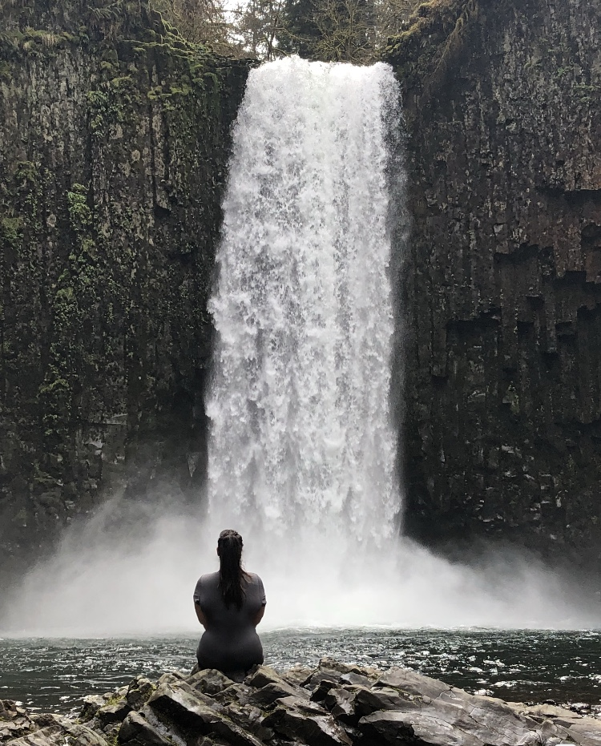

About Me

Hello to anyone that may be viewing this page!
My name is Nicole, I was lucky enough to be born and raised in the beautiful Pacific Northwest! I'm currently exploring a new career path as a full stack developer in Seattle, WA. Experienced with in the MERN stack which includes work with HTML, CSS, JavaScript, Node, Databases, React, and more. Click on my Portfolio page to check out some of my newest finished projects!
I'm always open towards finding new opportunities and ways to challenge myself. So if you're looking to work with me, feel free to reach out and contact me at any of the links below!